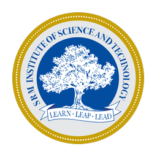
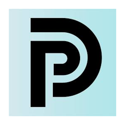
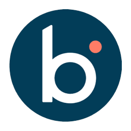
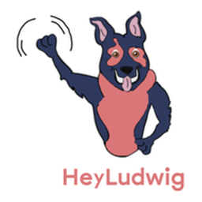

ASU
2019 — Present
Arizona State University
Ph.D. · Computer Science
Wearable AI, HCI, computer vision
I build production LLM systems, agentic platforms, and wearable AI for health, from a 464-class M&A due-diligence classifier to a wrist-worn camera that tracks medication adherence for older adults.
I move between shipping production AI and doing research on it. At DealPrint I own the AI stack for an M&A platform: calibrated classifiers, eleven human-in-the-loop agents, voice agents, and a finance engine. At ASU I lead PERACTIV, a wrist-centric AI system for activity recognition and medication adherence. A Quantic MBA rounds this out with finance, strategy, and operations, which is why the deal calculators and finance engine at DealPrint are mine as much as the models are.
Applied AI · Wearables & HCI · Computer vision · Teaching · Business strategy
Production LLM systems on AWS Bedrock and Claude: document classification with calibrated confidence, agentic customer-lifecycle workflows, LiveKit voice agents, and unit-tested deal calculators.
Wrist-worn camera systems and ML for human activity understanding, medication adherence, and fall detection. Co-PI on WearTech and Global Sport Institute grants.
Instructor for FSE 100 and teaching assistant for CSE 463, CSE 360, CSE 180, and CSE 110 at ASU. Mentored 20+ capstone students across three labs. Recipient of the Graduate Teaching Excellence and Graduate Mentorship awards.
226 reviews across 56 conferences and journals, including ACM CHI, HRI, ETRA, TOMM, and HCII. Editorial boards at Clareus Scientific and PriMera Scientific Engineering. Co-chair at ETRA 2025 and ICSM 2025.
MBA from Quantic School of Business and Technology on a Zenith Award merit scholarship. Coursework in finance, accounting, markets and economics, strategy, data and decisions, marketing and pricing, supply chain and operations, and entrepreneurship. It shows up in the IRR solvers, SBA 7(a) fee models, and DSCR stress grids I ship at DealPrint.
Ph.D. · Computer Science
Wearable AI, HCI, computer vision
Master of Business Administration
Zenith Award merit scholarship
Master of Computer Science
Data science, NLP, robotics perception

SRMB.Tech · Computer Science and Engineering
Thesis on ML for stock-price prediction
A path through neuromorphic chips, generative AI, wearable health research, and now an AI-first M&A platform.

DPAgentic deal platform, document intelligence, and voice agents for M&A
ML-based fall detection and post-fall analysis from wearable motion and physiological sensors

BRAG-powered documentation tools and Chainlit conversational experiences
Neuromorphic anomaly detection on AKD1000 and distracted-driving detection
PERACTIV wrist-centric AI for activity recognition and medication adherence; Co-PI on WearTech and Global Sport Institute grants
Led a 5-person team on a speech-interactive educational toy with a 300% engagement lift

HLDialogflow chatbot that lifted client engagement by 25% and cut response time by 15%
Churn prediction on call-detail records and multiclass classification of social streams with Apache Spark
Independent systems in agents, autonomous trading, security, and applied ML, plus a decade of academic and applied builds.
An autonomous multi-agent system that turns natural-language trading hypotheses into structured experiments, generates strategies, runs institutional-grade backtests, and refines results through agent critique loops. Role-specialized agents coordinate over the Model Context Protocol with reproducible experiment lineage. Its execution layer, built on n8n and the Charles Schwab API, fuses real-time market data and news sentiment to trade autonomously with stop-loss and profit-taking logic.
CrewAI and GPT-4o agents (RoleParser, PersonaCalibrator, BulletRewriter, PDFExporter) that produce ATS-optimized resumes, plus a critique agent and a mock-interview agent.
Ranked #2 globally in the Mayhem Heroes program for automating fuzz testing across 48 critical open-source repositories, surfacing zero-day vulnerabilities through containerized deployments and CI/CD pipelines.
Real-time edge computer vision for smart cities on Luxonis OAK-D: occupancy, queue length, mask compliance, and crowd density from one API.
Production transfer-learning classifier for NanoCheQ on AWS SageMaker: 94.9% accuracy, 35% over baseline.
Getis-Ord hot-spot detection on 50 GB of NYC taxi data with Apache Spark and Sedona, with real-time visualization of high-activity zones.
PointNet, PointNet++, and VoxelNet for 3D robotic perception from LIDAR data via ROS and Open3D.
Neural-network and random-forest ensemble over 11M CERN records with Keras and scikit-learn, reaching 71% accuracy.
Participatory design framework for dementia-care technology, integrating policy informatics across technology, law, architecture, markets, norms, and education.
Analysis of assistive technologies for dementia patients with low-fidelity proposals such as environmental sensors for usability and location tracking.
Visual servoing and depth estimation with ROS and OpenCV to guide a Fetch robot to partially occluded objects.
Inception-V3 classification service on AWS EC2, S3, and SQS that scales compute dynamically for real-time inference.
Sentiment-aware event crowdsourcing app in Java and Android on Google Cloud Platform with real-time messaging, auto-scaling, and media sharing.
Led a team of four on a CNN-based QA system with coreference resolution, sentence embeddings, and NER, reaching 54.7% accuracy.
QA over DBpedia with Python, Stanford NLP, and SPARQL: semantic parsing, query formulation, and graph matching for firm-related questions.
Interactive D3, Crossfilter, and dc.js dashboard over 1B+ trips with insights on fares, tips, locations, and passenger behavior.
PHP and MySQL backend with multilingual front end enabling e-learning, e-governance, and IT access in underserved rural communities.
Server and network administration for a university search engine that filtered, clustered, and displayed results with improved relevance.
PERACTIV is a wrist-worn camera and ML system that understands human activity through the hands. I lead its development at ASU's CUbiC Lab: privacy-aware training, automated annotation pipelines, and applications in medication adherence, activity tracking for seniors and athletes, and clinical monitoring dashboards.
Wrist-based video analytics for medication adherence in elderly individuals living alone.
Wearable tools for tracking physical activity and remote training for seniors and athletes.
Collaborated with Adidas, Pizza Hut, and Edgenuity on tools that combined Tobii eye tracking with affective sensors to collect and analyze user-experience data. Modeled trust and motivation from EEG, GSR, and eye-tracking data using brain-computer interfaces, and ran A/B tests that optimized e-commerce sales.
Compared Random Forests, Support Vector Machines, Deep Neural Networks, Linear Regression, and Decision Trees for predicting closing prices, reaching 0.79 accuracy with Random Forests and 0.77 with Deep Neural Networks.
Distinguished Speaker on deploying PERACTIV in nursing homes with centralized monitoring dashboards and ADL recognition.
Invited seminar on wearable sensors, interpretable ML, and human-centered design for continuous patient monitoring.
Invited talk on wrist-centric multimodal AI for medication adherence, activity recognition, manufacturing, and robotics.
Invited instruction on AI, Python, and data analytics for high-school and undergraduate students.
Arizona State University
Arizona State University · FSE 100
Fuzz testing across 48 open-source repos
I have taught more than 1,600 students at ASU as an instructor and teaching assistant, mentored 20+ capstone students on projects for FedEx, Pizza Hut, and Edgenuity, ran daily operations for three research labs, and reviewed 226 papers for 56 conferences and journals across HCI, computer vision, and multimedia. I am available to judge hackathons, review papers, and speak on applied AI and wearable health.
Invite me to speak or judge ↗Instructor for FSE 100 Introduction to Engineering across four terms. Teaching assistant for CSE 463 Human-Computer Interaction (1,600+ students), lab instructor for CSE 110 Principles of Programming with Java, and grader and lab instructor for CSE 360 Introduction to Software Engineering and CSE 180 Computer Literacy. AI instructor at AI4ALL.
CUbiC Lab (2021 to 2022): four undergraduates and a volunteer building wearable tech with mobile deep learning. iLUX Lab (2017 to 2020): four projects and 20+ students, including UX features for Pizza Hut and EEG, BCI, GSR, and eye-tracking data pipelines. ANGLE Lab (2019): two teams building AR pallet-packing optimization for FedEx.
Administrative Researcher at CUbiC, iLUX, and ANGLE Labs (2019 to 2026): daily operations, grant proposals, and partnerships with FedEx (HoloLens AR cargo loading), Adidas, Pizza Hut, and Edgenuity, while supervising thesis students and volunteers.
Clareus Scientific Science and Engineering · PriMera Scientific Engineering · Readers committee, IJAIKE.
Committee member and co-chair, ACM ETRA 2025 · Special sessions co-chair, ICSM 2025.
ACM CHI · HRI · ETRA · TOMM · OzCHI · ICWSM · IEEE PacificVis · HCII.
For roles, collaborations, speaking, judging, or a conversation about production AI and wearable health.
Send a message ↗